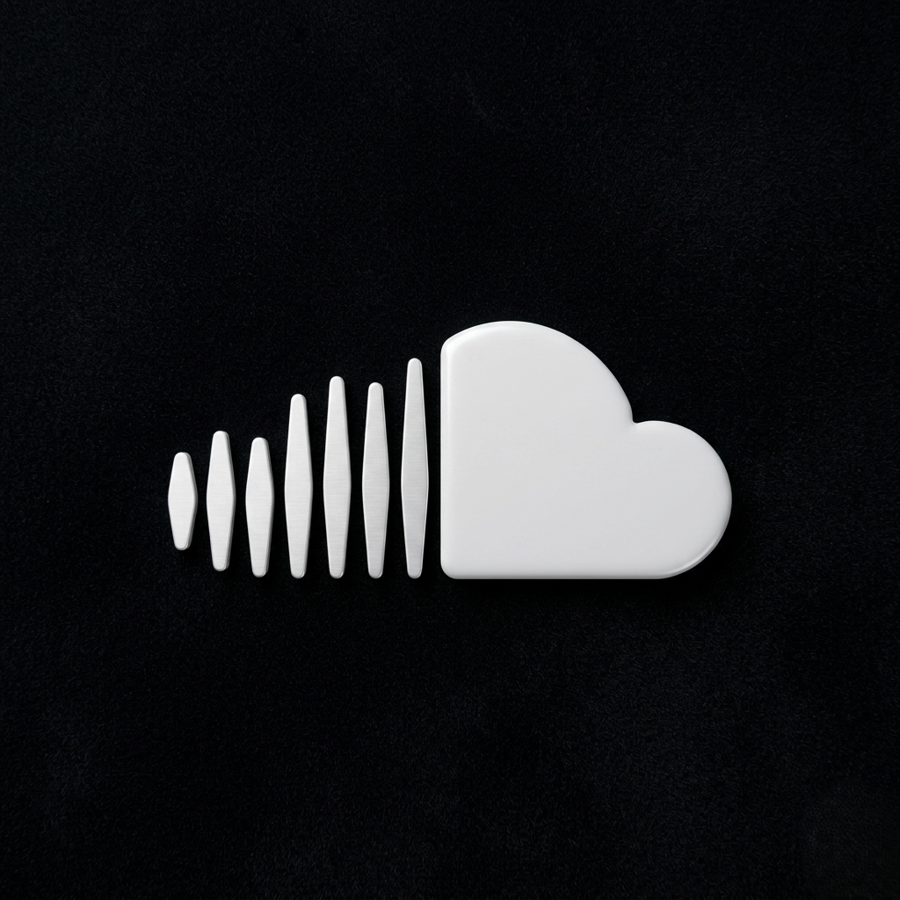

SoundCloud

SoundCloud (Саундклауд) — это международная онлайн-платформа и музыкальная соцсеть, где пользователи
могут загружать, продвигать и слушать аудиозаписи.
Что это такое?
Платформа культовая для независимых музыкантов, диджеев, подкастеров и рэперов.
Именно здесь зародился жанр «саундклауд-рэп» и начинали карьеру такие звезды, как Billie Eilish, Post Malone
и
XXXTentacion.
- Фирменная фишка: Музыкальное аудио отображается в виде графической звуковой волны (waveform), на которой
слушатели могут оставлять комментарии, привязанные к конкретной секунде трека.
- Свобода и комьюнити: В отличие от Spotify или Apple Music, сюда любой желающий может загрузить свой трек
или
микс за пару кликов. Это делает SoundCloud огромной базой для поиска уникальных ремиксов, демо-записей и
андеграундной музыки.
- Формат работы: Доступен бесплатно (с рекламой и ограничениями), но есть и платные подписки — как для
слушателей
(SoundCloud Go/Go+ без рекламы и офлайн), так и для авторов (Pro-аккаунты для расширенной статистики и
безлимитных загрузок)
Популярность
В странах СНГ у SoundCloud сложилась уникальная, во многом культовая репутация. Если для массового слушателя главными площадками остаются «Яндекс Музыка» и VK, то SoundCloud стал главным андеграунд-инкубатором
Оффициальный Сайт
Оффициальный Инстаграмм
Следующая Страница